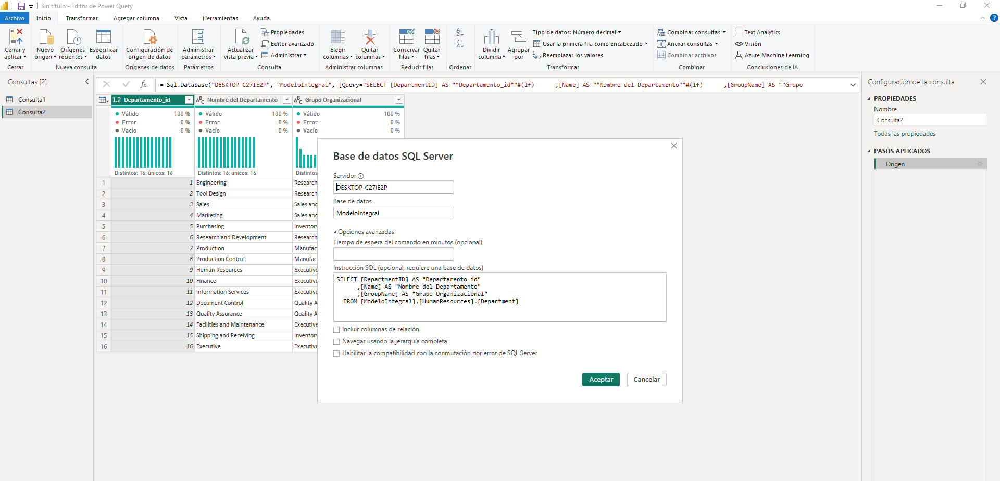

Detalles del Proyecto
Proceso
Consulta SQL para realizar la extracción, transformación y carga (ETL)
Se realiza la conexión en Power BI a través de la consulta
Muestra de los datos cargados para trabajar en el modelo semántico



Análisis y Procesamiento de Datos de Incidencias con Python y Pandas
Repositorio
Puedes acceder al código fuente en GitHub.
Volver al Portafolio